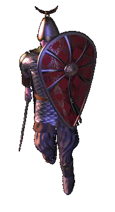

|
Дружина |
|
| Вооруженная борьба в XII
веке являлась не только постоянным промыслом, но
и единственным методом разрешения
территориальных и прочих проблем. Для этого
времени характерна дружинная воинская
идеология, регламентированное построение полков
и борьба на несколько фронтов. В XII веке имелась постоянная воинская организация -- княжеское войско -- дружина. Дружина была немногочисленна, она не имела самостоятельного военного значения, а была ядром военной организации на случай войны, похода или отражения нападения. Дружина была конным войском, неотделимым от своего хозяина. Она могла переходить по наследству от отца к сыну, оставаясь принадлежностью дома-семьи. Дружина была не только постоянным войском князя и знати, но и органом, на который князь опирался в политическом управлении. Дружина состояла из представителей различных социальных групп -- приближенные к князю люди (старшая дружина) и рядовые воины-профессионалы (младшая дружина). Дружины содержались и вооружались за счет князей, богатых и знатных людей. Русские дружинники XII века были настоящими профессиональными воинами, не уступавшими по вооружению своим западным современникам. Наряду с княжескими дружинниками на полях сражений выступали боярские отряды, городские и областные ополчения. В качестве самостоятельных соединений в военных действиях принимали участие иноплеменники-федераты -- например, черные клобуки на севере, водь, карела на юге. Городские окраины организовывали свою военнизированную милицию, составлявшую городской полк. В войнах участвовал и городской люд. Бояре в Древней Руси составляли старшую княжесткую дружину и являлись членами княжеского совета. Довольно часто старшую дружину составляли дружинники, добывшие себе славу и высокое положение на службе у князей или перешедшие к ним уже с заслугами от отцов этих князей. Они составляли постоянный совет (думу) князя и были вольны свободно переходить от одного князя к другому. Наряду со старшей дружиной была и дружина младшая. Это была прислуга, которая при нем состояла постоянно и жила у него в доме -- отроки, пасынки, молодь -- молодые люди. Младшие дружинники были рядовыми воинами. На время боевых действий собирали полк, рать -- войско, которое участвовало в сражении. Войско состояло из дружинников и воинов-ополченцев -- представителей народа. Для того, чтобы собрать ополченцев, требовалось решение веча. Без него можно было собрать только тех смердов, которые не зависели от веча и находились во власти князей. После окончания похода народное войско распускалось -- в этот период войско было равно народу, воином становился каждый боеспособный мужчина. В войско входили все социальные слои населения -- бояре, «простые люди», горожане и смерды. Вместе с княжескими дружинниками в войско входили боярские и дворянские дружины, городские и областные ополчения. В качестве самостоятельных соединений -- вспомогательных частей -- в военных действиях принимали участие иноплеменники-федераты -- черные клобуки, водь, карела. Во главе войска стоял князь, который управлял им опираясь на знать, имевшую свои дружины. Войском мог командовать и человек от имени князя -- воевода. |
|
Текст и
иллюстрации (c) 1997 Snowball Interactive Entertainment, Inc. |